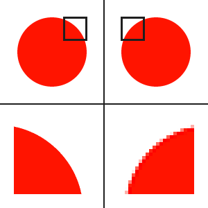

Het opslaan van afbeeldingen in natuurlijk erg belangrijk. Voor het opslaan zijn er twee mogelijkheden. De bitmap en een vector afbeeldingen
Een bitman is een manier die jouw computer of telefoon kan gebruiken om een afbeelding op te slaan. Het opslaan met een bitmap gaat via pixels. Pixels zijn gekleurde vakjes. Wat dit precies inhoud kun je lezen bij de kleurmodellen. Met de bitmap heb je als voordeel dat je alles goed, scherp en duidelijk kan afbeelden. Als nadeel is het alleen dat wanneer je inzoomt op de afbeelding het helemaal niet meer duidelijk is en je dan heel veel pixels ziet. In het plaatje hieronder kun je aan de rechter kant zien hoe het inzoomen bij het gebruik van de bitmap eruit ziet.
Je kunt ook een afbeelding opslaan als vector afbeelding. Een vector afbeedling werkt niet met pixels, maar met vormen,locatie,grootte en kleur. Omdat het niet met pixels werkt kun je niet echt duidelijk een gedetaileerde afbeelding afbeelden. Als voordeel heeft dit wel dat als je inzoomt je nog steeds weet wat je ziet en dat dat ook scherp is, wat bij een bitmap niet zo is door de pixels. In de afbeelding hier boven kun je links zien hoe het eruit ziet als je inzoomt bij een vector afbeelding. Je kunt duidelijk het verschil zien.